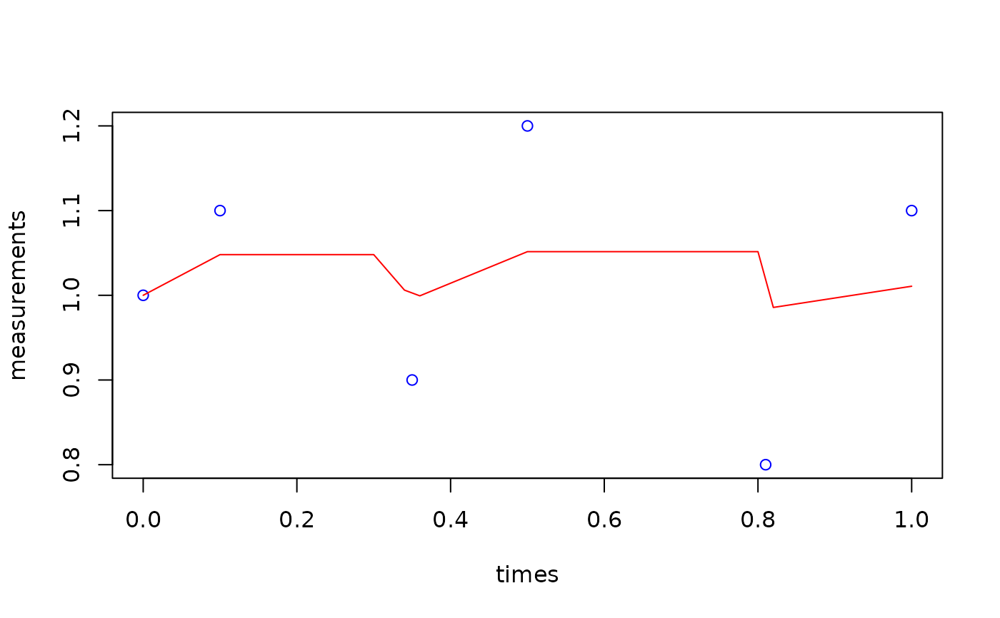

Kalman Filter for Irregular Time Series with Optional Resampling
Source:R/filter_kalman.R
filter_kalman_irregular.RdImplements a Kalman filter for irregularly sampled time series data with optional resampling to regular intervals. Handles variable sampling rates, missing values, and automatically adjusts process variance based on time intervals.
Usage
filter_kalman_irregular(
measurements,
times,
base_Q = NULL,
R = NULL,
initial_state = NULL,
initial_P = NULL,
resample = FALSE,
resample_freq = NULL
)Arguments
- measurements
Numeric vector containing the measurements to be filtered.
- times
Numeric vector of timestamps corresponding to measurements.
- base_Q
Optional. Base process variance per second. If NULL, automatically calculated.
- R
Optional. Measurement variance. If NULL, defaults to 0.1.
- initial_state
Optional. Initial state estimate. If NULL, uses first non-NA measurement.
- initial_P
Optional. Initial state uncertainty. If NULL, calculated from median sampling rate.
- resample
Logical. Whether to return regularly resampled data (default: FALSE).
- resample_freq
Numeric. Desired sampling frequency in Hz for resampling (required if resample=TRUE).
Value
If resample=FALSE: A numeric vector of filtered values corresponding to original timestamps If resample=TRUE: A list containing:
time: Vector of regular timestamps
values: Vector of filtered values at regular timestamps
original_time: Original irregular timestamps
original_values: Filtered values at original timestamps
Details
The function implements an adaptive Kalman filter that accounts for irregular sampling intervals. Process variance is scaled by the time difference between measurements, allowing proper uncertainty handling for variable sampling rates.
Key features:
Handles irregular sampling intervals
Scales process variance with time gaps
Optional resampling to regular intervals
Automatic parameter selection based on median sampling rate
Missing value (NA) handling
When resampling, the function uses linear interpolation and warns if the requested sampling frequency exceeds twice the median original sampling rate (Nyquist frequency).
Note
Resampling considerations:
Avoid resampling above twice the median original sampling rate
Consider the physical meaning of your data when choosing resample_freq
Be cautious of creating artifacts through high-frequency resampling
Parameter selection guidelines:
base_Q controls the expected rate of change per second
R should reflect your measurement noise level
For slow-changing signals, reduce base_Q
For noisy measurements, increase R
Examples
# Example with irregular sampling
measurements <- c(1, 1.1, NA, 0.9, 1.2, NA, 0.8, 1.1)
times <- c(0, 0.1, 0.3, 0.35, 0.5, 0.8, 0.81, 1.0)
# Basic filtering with irregular samples
filtered <- filter_kalman_irregular(measurements, times)
# Filtering with resampling to 50 Hz
filtered_resampled <- filter_kalman_irregular(measurements, times,
resample = TRUE,
resample_freq = 50)
#> Warning: Requested resampling frequency (50 Hz) exceeds twice the median sampling rate (6.66667 Hz).
#> This may lead to poor interpolation.
# Plot results
plot(times, measurements, type="p", col="blue")
lines(filtered_resampled$time, filtered_resampled$values, col="red")
